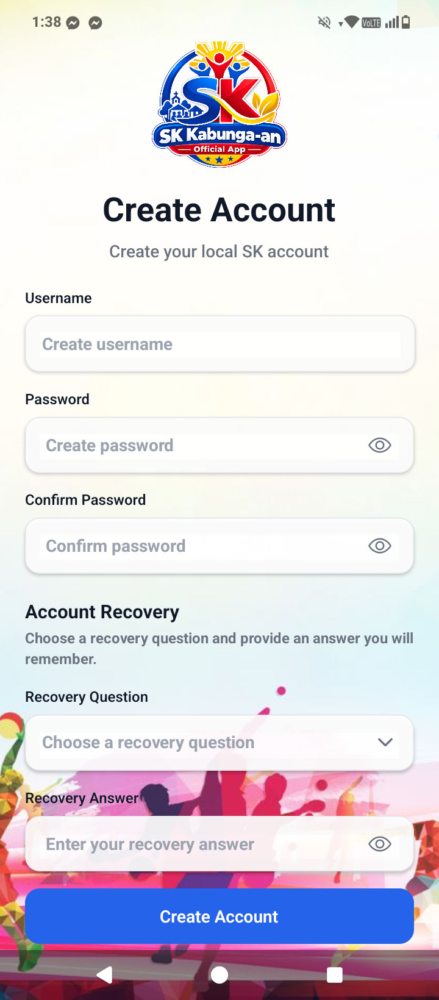

Create an Account
Create your local SK account before signing in to the application.

Create Account screen of the SK Kabunga-an Official App.
Enter a Username
Type the username you want to use for your local SK account. The username must contain at least 3 characters.
Create a Password
Enter a password with at least 6 characters. Choose a password that you can remember but that other people cannot easily guess.
Confirm Your Password
Enter the same password again in the Confirm Password field. Both password entries must match.
Choose a Recovery Question
Select a recovery question that you can answer later if you forget your password.
Enter Your Recovery Answer
Type the answer to your selected recovery question. The recovery answer must contain at least 3 characters.
Tap Create Account
Review your information, then tap Create Account. After the account is created successfully, continue to the login screen and sign in.